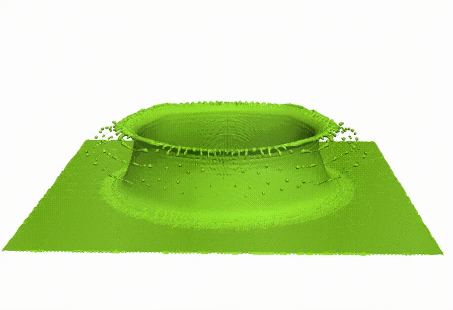
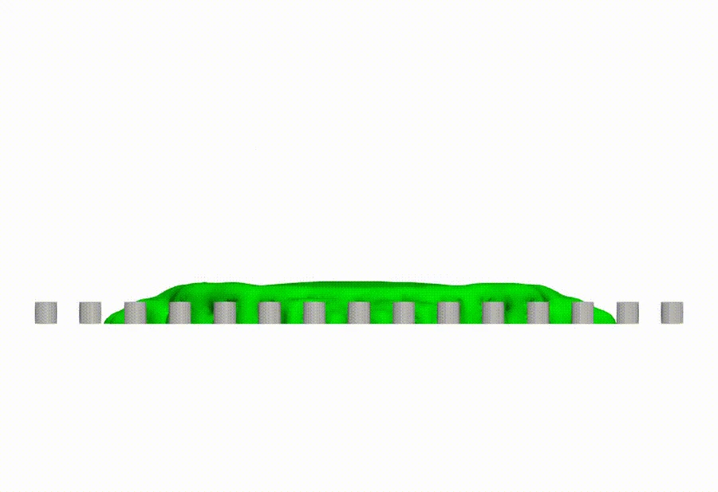

Incompressible two-phase flows不可压两相流
Cahn–Hilliard–Navier–Stokes and Allen–Cahn–Navier–Stokes models, phase-field formulations, and separate mass preservation.Cahn–Hilliard–Navier–Stokes 与 Allen–Cahn–Navier–Stokes 模型、相场方法及分相质量守恒。
About个人简介
I am Haochen Liu, a PhD student in the Faculty of Science at the University of Macau. My research focuses on computational mathematics and numerical simulation of incompressible two-phase flows.我是刘昊琛，现为澳门大学理学院博士生，主要从事计算数学与不可压两相流数值模拟研究。
I develop numerical methods that connect phase-wise mass preservation, fully implicit finite element discretizations, and scalable nonlinear and linear solvers. My work spans mathematical modeling, numerical algorithm design, C++ implementation, and verification through convergence studies and parallel experiments.我的研究围绕分相质量守恒、全隐式有限元离散，以及可扩展的非线性与线性求解器展开，涵盖数学建模、数值算法设计、C++ 程序实现，以及收敛性测试和并行计算实验。
Research Interests研究方向
Cahn–Hilliard–Navier–Stokes and Allen–Cahn–Navier–Stokes models, phase-field formulations, and separate mass preservation.Cahn–Hilliard–Navier–Stokes 与 Allen–Cahn–Navier–Stokes 模型、相场方法及分相质量守恒。
Energy-stable, fully coupled, fully implicit finite element schemes and adaptive mesh refinement.能量稳定、全耦合、全隐式有限元格式，以及自适应网格加密。
Generalized Navier boundary conditions, droplet impact on structured substrates, and multiphase models with surfactants.广义 Navier 边界条件、液滴撞击结构化基底，以及含表面活性剂的多相流模型。
Newton–Krylov–Schwarz methods, nonlinear elimination and NEPIN, and two-level linear preconditioners for large-scale simulations.Newton–Krylov–Schwarz 方法、非线性消去与 NEPIN，以及面向大规模模拟的两层线性预条件方法。
Selected Research研究工作
I investigate the SMP-ACNS formulation with Heaviside-based phase constraints and two Lagrange multipliers. The algorithm combines a fully implicit Crank–Nicolson finite element discretization with phase-wise mass projection after the nonlinear solve.我研究基于 Heaviside 分相约束与两个 Lagrange 乘子的 SMP-ACNS 模型，将全隐式 Crank–Nicolson 有限元离散与非线性求解后的分相质量投影相结合。
The C++ implementation uses libMesh and PETSc. Verification includes manufactured-solution convergence tests, bubble merging and rising, three-dimensional pinch-off, and assessments of mass variation, energy behavior, and parallel scalability.使用 C++、libMesh 和 PETSc 实现求解器，通过制造解收敛性测试、气泡融合与上升、三维颈缩等算例，考察质量变化、能量性质和并行可扩展性。
Selected fixed-size strong-scaling experiment: 42,253,926 degrees of freedom; five time steps, Δt = 0.01; Schwarz / ILU(1), GMRES(50). Speedup is relative to np = 256.固定规模强扩展实验：42,253,926 个自由度；5 个时间步，Δt = 0.01；Schwarz / ILU(1)，GMRES(50)。加速比以 np = 256 为基准。


Education教育经历
2023.08 — 2027.08
(expected)（预计）
PhD in Mathematics (in progress) · Faculty of Science数学博士在读 · 理学院
Research in computational mathematics and parallel scientific computing.从事计算数学与并行科学计算研究。
2020.09 — 2023.06
Master’s Degree in Computational Mathematics计算数学 · 硕士
Finite element methods for coupled closed-loop geothermal systems.闭环地热耦合系统的有限元方法。
2016.09 — 2020.06
Bachelor’s Degree in Mathematics and Applied Mathematics数学与应用数学 · 本科
Publications学术论文
Journal of Computational Physics, 533 (2025), 113980.
DOI ↗Well-posedness and finite element approximation for the steady-state closed-loop geothermal system.
Discrete and Continuous Dynamical Systems – B, 28(11) (2023), 5514–5541.
DOI ↗A two-grid decoupled finite element method for the stationary closed-loop geothermal system.
Journal of Applied Analysis and Computation, 13(4) (2023), 1837–1851.
DOI ↗A penalty finite element method for the stationary closed-loop geothermal model.
International Journal of Numerical Analysis and Modeling, 20(4) (2023), 557–576.
DOI ↗Separate-mass-preserving Allen-Cahn-Navier-Stokes modeling and numerical methods for incompressible two-phase flows.
Submitted to Journal of Computational Physics已投稿至 Journal of Computational Physics
Teaching教学分享
I share lectures on finite element theory and its implementation. The course collection is available on Bilibili for students and anyone interested in numerical methods.我分享有限元方法的理论讲解与程序实现，配套课程已在哔哩哔哩公开，欢迎对数值方法感兴趣的同学交流学习。
Watch the finite element methods course观看有限元方法课程合集Research Tools科研工具
Contact联系我
For research discussions and academic enquiries, please reach me by email.如需交流科研问题或学术合作，欢迎通过邮件联系。